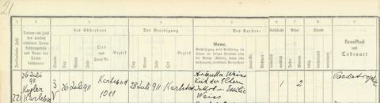

Ernestine Blau
1876–1931
Life events
| Hebrew Name | 1876 · Esther |
|---|---|
| Born | |
| Education | 15 Jul 1891 · 1020 Leopoldsgasse 3, Vienna, Austria Map · Report card - City Public School for Girls - Städt Bürgerschule für Mädchen  |
| Lived | 8 Jan 1894 · 1020, Kleine Pfarrgasse 29, Vienna, Austria Map · Per Edmund's birth record.  |
| Lived | 11 Apr 1899 · 1020, Taborstrasse 49, Vienna, Austria Map |
| Married | 11 Apr 1899 · Jakab Weisz · Polish Synagogue, 1020 Leopoldsgasse 29, Vienna, Austria Map  |
| Lived | 4 Sep 1911 · Karlovy Vary, West Bohemia, Czech Republic Map · On the list of Karlsbad Spa guests; she lived in town. |
| Lived | |
| Died | |
| Buried |
Family

Jakab Weisz1873–1915
Children
 Robert Weiss1903–1993
Robert Weiss1903–1993 Edith Weiss1905–1986
Edith Weiss1905–1986 Hildegard 'Hilde' E Weiss1908–1999
Hildegard 'Hilde' E Weiss1908–1999 Aranka Weiss1911–1911
Aranka Weiss1911–1911
Photos
Ernestine Blau

Ernestine Blau
Ernestine Blau
Ernestine Blau
Betti Borbola Fuchs
Samuel Blau
Ernestine Blau
Jakab Weisz

Robert Weiss
Ernestine Blau

Edith Weiss
Ernestine Blau

Ernestine Blau
Jakab Weisz

Hildegard 'Hilde' E Weiss
Ernestine Blau
Ernestine Blau

Aranka Weiss
Ernestine Blau

Aranka Weiss
Ernestine Blau
Anna Maria Schepan
Teresa Feldman
Josef Blau
Betti Borbola Fuchs
Samuel Blau
Ilonka 'Helen' Blau
+13 more

Hildegard 'Hilde' E Weiss
Edith Weiss
Robert Weiss
Ernestine Blau
Hildegard 'Hilde' E Weiss
Robert Weiss
Ernestine Blau
Ernestine Blau
Ernestine Blau